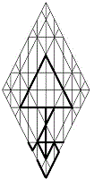
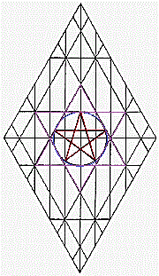

|
mda אדם Adam |
 |
man, humanity; lifeblood; ruddy, reddish; a ruby, garnet; Edom. |
|||||||||
|
Torah calls
Adam the Son of God—his
projection, self-expression, his Word;
for as the outward husk of brother Adam
mda
received the Life Breath, his entire organism was impregnated by
the emanation of the Holy Fire of
Wisdom, creating the living soul.
In the Garden narrative, it’s the Life in the Breath of Father
hy
that’s properly understood as God’s Son; not the man, himself.
The
name of the First Man implies covenant,
agreement,
as it is affirmed by its letters: for the generic “Man” applies to each
one of us. Along with everyone else,
each of us carries a Spark of God’s Presence
a
in our bloodstreams
md.
The Holy Father is our Life, whether or not we understand it to
be so. This saying echoes what is taught concerning the
Presence called ImmanuAL, translated as “God within us”; for the
Father of Life
a
hides in the hearts
d
of humanity
m.
As the divine exhale of Eternal Life filled the outward husk of
the man Adam, the heavenly Father simultaneously laid the
cornerstone of the Temple Made without Hands; for fusion of the
eternal and temporal realms established the full parameters of
the immortal realm, and this is the very
reason Heaven’s
angels are said to have shouted for joy at the man’s creation!
To the benefit of the hosts of Heaven, Adam became the Door to
Earth; and this first man—by laying down his spiritual Life on
behalf of Eve, that they might reach perfection, together—this
First Adam would become the Door of Return, as well.
In answer
to God’s thoughts, angels are individual tongues of
flame that rise up and fall back down again upon the holy Lake of Fire
surrounding Heaven’s throne, intent on doing God's bidding. The creation and quickening of Adam
was affirmation of the angelic hope that, one day—a day that
would become possible with Man’s perfection—Heaven’s angels
would be blessed with permanent, immortal souls-- with celestial
tabernacles suiting their immortal identities capable of withstanding the fiery essence
peculiar to the
angelic realm throughout the reaches of eternity.
After the Fall, there were angels who would hasten that day, were it possible.
In their impatience to discover what their own futures would
bring, they swarmed the children of men, forming bonds with
those mortals who offered the best likelihood of attaining
perfection. In their eagerness, they upset the ambience of
Earth. Some lusted for an accelerated outcome so fervently that
they seduced sons of men. Courting whom they would, they turned
their prey into chariots of their own desires, diverting men
from the natural course of their mortal lives and perverting
their understanding of immorta;ity. Possessing such men
by reason of their superiority, they became known as mighty men on
Earth; but they were not successful men.
Nod would be their
undoing.
A kind of war arose in Heaven; for there were angels who, after
Adam became a living soul, did not betray their focus on HaShem.
They understood the implications of the cross of the eternal and
the temporal realms within Adam, knowing it would work to their
benefit over time;. Rather than succumb to obsession with the sons of
men, however, they became even more fascinated with the hand Father
hy
was taking in the affairs of Heaven and Earth. At the time of Adam’s
spiritual birth as a living soul, therefore, divisions began to
develop within Heaven,
the beginnings of the camps of dualism. The more aggressive
camps proselytized. The more conservative camps waited, watched, and
found themselves besieged.
With respect for the
First Adam and with unfailing interest in
the will of YHWH,
the angels who maintained their focus on HaShem would contain
themselves in their interactions with Man, consulting with Father
hy
concerning their interactions. They were patient,
understanding that, as concerns the perfection of souls, the
Father had appointed each angelic essence within
every
camp to come to its own particular rest as a Lamp of Divinity,
but in accordance with the order he foresaw for the good of all.
Every
angel was curious about the humble beginnings of Man, and many
were
amazed the Father took such care with them, had such patience; for
surely, when mankind should begin to spread abroad across the face of Earth, the throngs of humanity
would have unpredictable interactions. Their fellowship, one
with another, would be hidden behind an endless maze of unique doors.
As Shepherd, the Father would surely be tested as each human
blundered his return to heavenly realms.
It was to the benefit of immortal angels that the Father should
engineer the lives of humans in his likeness; for the immortal
and mortal realms crossed in Man, and the immortal perspective
could not fathom all contingencies. Alone in the eternal realm,
only
God could know the arc of
the future. Those angels who had been hasty
in their interactions with Man would be blinded by complexity.
Suffering imperfection by reason of covetous lust,
they would live and die as men,
repeatedly, before they could become worthy of
celestial wings. Eternity is eternity; and as the Father has Life in himself, so too
would they, in due course; but each, in his order. Not a matter
that could be hastened, that day
would come through congruence, not by achievement.
By that first Breath, the fullness of
hwhy
was invested in Adam; and, thus, it is said of him, “male and
female created he them.” The beginning of the creation of
Elohim,
mda
is the emanation
a
that glows
d
from within us
m.
Never destined to abide alone, Adam was the seed
a
that was planted
d
and watered
m,
that the Life Spark of the Father could blossom forth
a
in the hearts
d
of his children
m.
It will be so; for the Father
a,
hidden beyond every human perception
d
and all memory
m,
enlivens
a
the hearts
d
of us all
m. The principle of emanation a was foundational d to the ministry m of John the Baptist, who bore witness a to his perception that one would appear d who would be worthy of the anointing of Messiah m. By John’s laments, we know that the Baptist was oppressed a by the weight d of iniquity m. Like an apostle, he was as a grain of sand being wrapped in the swaddling clothes of the Master, that great a Treasure d of humanity m who is called the Pearl of Great Price. Of all born of women, none is greater than John, and yet the Least is greater; for the Least among us all is ImmanuAL, who shall be carried to the birth by us all, first and last.
Gematria
45
hm;
Numerology
18
jy >
9
f;
Targum
mda:
A master at gauging the currents of spiritual Yordan, John the
Baptist came to understand that the holy Life Force
a
in the blood
md
is none other than ImmanuAL, the incarnate
a
gateway to the heavens
d
for all of Earth’s people
m.
Bearing witness to the holy Life within his mortal frame by his words and
by his
deeds, John awakened in himself, as in others, expectations of that quality of Being
which could express the fullest measurement of Life. |
|||||||||||
|
|||||||||||
{kind=link}
{kind=link}